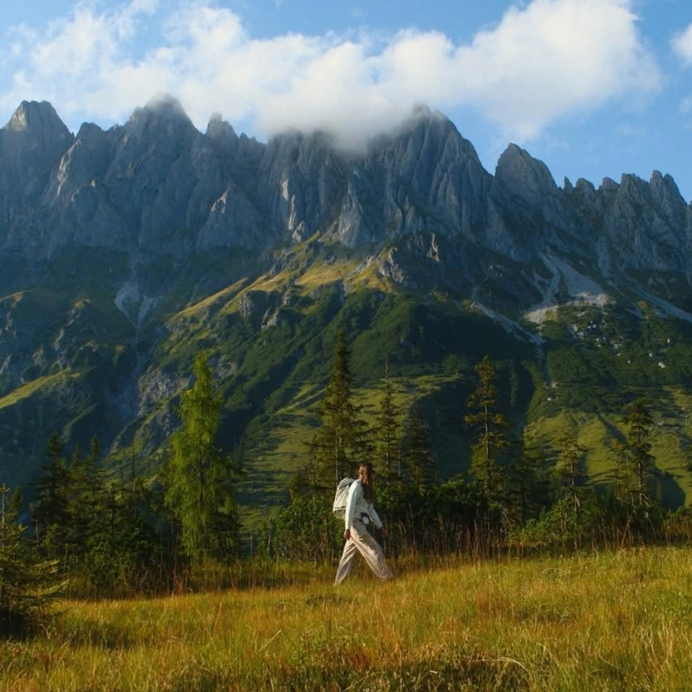

- Intent
- An Astia-based soft landscape alternative with Shade WB and B +1, Color +2 and reduced Clarity -4. DR400 moderates highlight loss but Highlight +2 restores bright tonal punch; weak FX Blue keeps blue separation subtler than the strong-blue recipes.
- Subjects
- coast, landscape, forest
- Light to consider
- daylight, overcast
- Palette
- blue, cyan, orange, green
- Observed references
- Alpine reference pairs blue sky and cool mountain faces with a yellow meadow; not evidence of a sea-specific restriction.
- Caution
- Shade WB is a warm compensation preset, not proof of a cold result. Highlight +2 can harden clouds despite the name. This earlier entry has ISO up to 6400 and unspecified compensation; preserve its own identity.
- Preview assumptions
- Use the saved film simulation, WB and tone settings for an approximate sRGB preview. Shade WB is a warm compensation preset, not proof of a cold result. Highlight +2 can harden clouds despite the name. This earlier entry has ISO up to 6400 and unspecified compensation; preserve its own identity.
- Evidence
- settings-inference · Reference appearance is observed; suitability and causal rendering remain interpretations. No paired untreated images or calibrated camera response.
Related direction
Calm Sea · Scotland — Settings are close, but exposure and ISO guidance differ; preserve separate identities.
Saved settings
- Film simulation
- Astia / Soft
- Dynamic range
- DR400
- Grain effect
- Strong · Small
- Color Chrome
- Strong
- Color Chrome FX Blue
- Weak
- White balance
- Shade
- WB shift
- R 0 · B +1
- Highlight
- +2
- Shadow
- 0
- Color
- +2
- Sharpness
- −2
- High ISO NR
- −4
- Clarity
- −4
- ISO
- Auto · up to 6400
- Exposure compensation
- Not specified
Evidence register
- data/recipes.json
- https://fujifilm-dsc.com/en/manual/x-s20/menu_shooting/image_quality_setting/